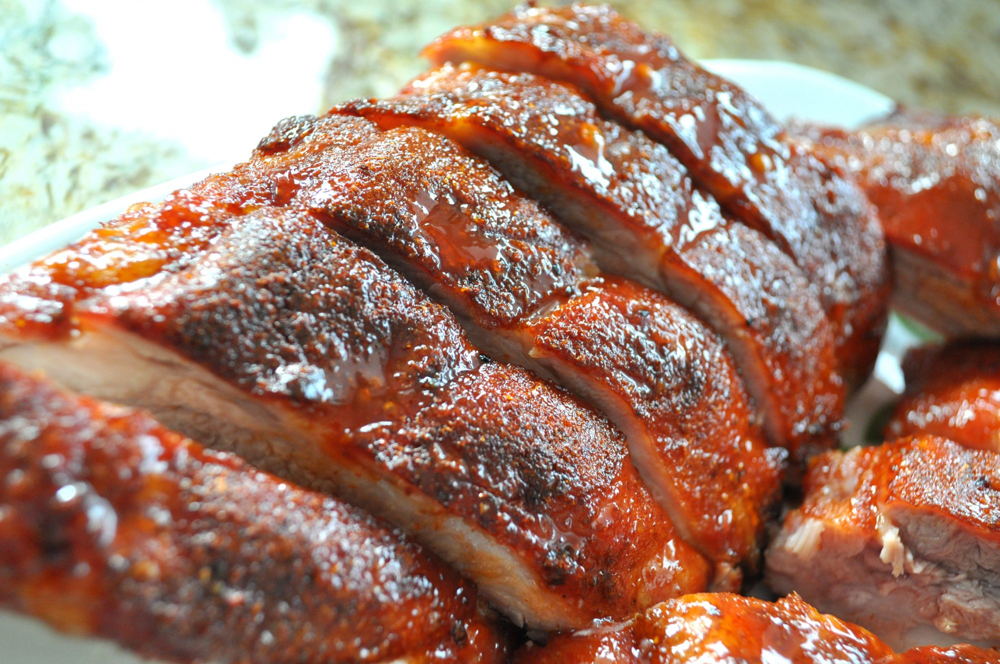

Baby Back Ribs

Description
A foolproof, simple recipe for the most tender, delectable ribs you've ever had. Follow the directions exactly, and success is guaranteed!
Ingredients
- 1 tablespoon ground cumin
- 1 tablespoon chili powder
- 1 tablespoon paprika
- salt and pepper to taste
- 3 pounds baby back pork ribs
- 1 cup barbeque sauce